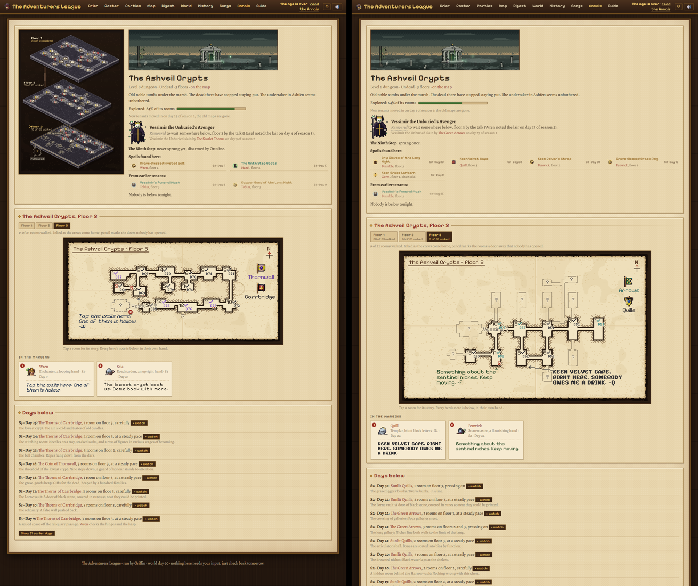
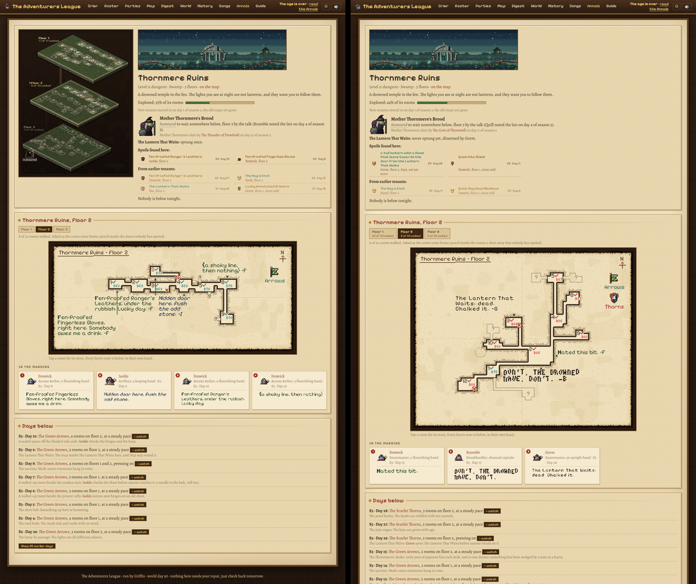
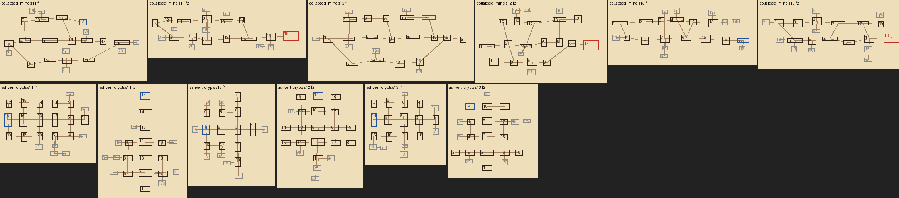
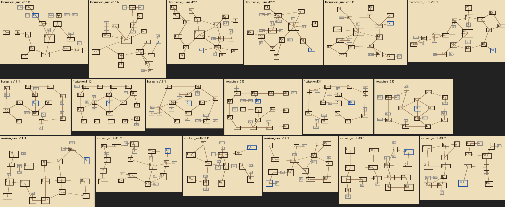
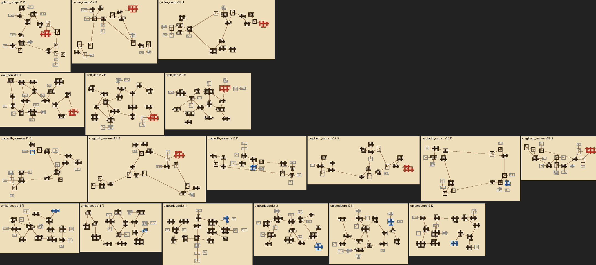

Dungeon maps, second pass
The fixes from your notes, on their own branch (not merged): a fresh 90-day demo league. The isometric stack is gone (kept in an unused/ folder), floors are tabs, tapping a room shows what happened there, the map shows walked rooms plus the rooms one passage away and nothing else, and floor layouts are no longer straight lines.
1. Try it
- Ashveil CryptsA crypt laid out on a processional axis with mirrored side chambers. Tap any inked room: its card opens with who cleared it and when, the story, notes and a ▸ watch for that day.
- Thornmere RuinsA courtyard hub with broken buildings around it.
- Frostspire · Sunken Vault · EmberdeepThe deep ones, partly mapped: a tower of rings, a vault, a cave. Check that pencilled "?" rooms are only ever one passage off a walked one.
- Cragtooth WarrenA goblin warren: clusters of burrows with loops.
2. Layouts, before and after


3. The new floor plans (3 seeds × 2 floors each, as graphs)



96–100% of floors now have loops, with 2–5 per floor; there are hubs, branches and dead ends, and each dungeon still has its ~20 rooms per floor. Balance against main: rooms a day within ±3%, days to the first kill within about ±15%. Frostspire's boss now falls in 5 of 32 leagues, where on main it never did.